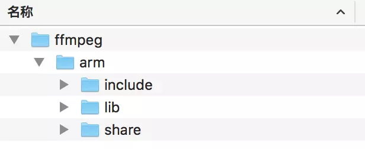
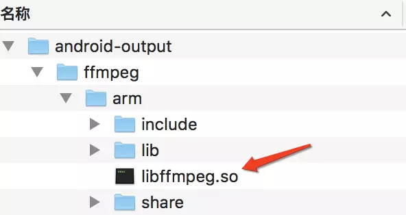
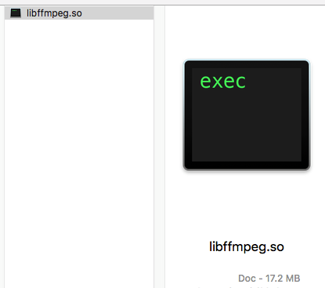
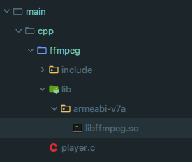
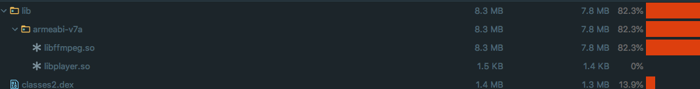

<!doctype html>


  


<html class="theme-next muse use-motion" lang="">
<head>
  <meta charset="UTF-8"/>
<meta http-equiv="X-UA-Compatible" content="IE=edge" />
<meta name="viewport" content="width=device-width, initial-scale=1, maximum-scale=1"/>


<meta http-equiv="Cache-Control" content="no-transform" />
<meta http-equiv="Cache-Control" content="no-siteapp" />


  
  
  <link href="/lib/fancybox/source/jquery.fancybox.css?v=2.1.5" rel="stylesheet" type="text/css" />


  
  
  
  

  
    
    
  

  

  

  

  

  
    
    
    <link href="//fonts.googleapis.com/css?family=Lato:300,300italic,400,400italic,700,700italic&subset=latin,latin-ext" rel="stylesheet" type="text/css">
  


<link href="/lib/font-awesome/css/font-awesome.min.css?v=4.6.2" rel="stylesheet" type="text/css" />

<link href="/css/main.css?v=5.1.0" rel="stylesheet" type="text/css" />


  <meta name="keywords" content="FFMpeg4.1 ndkr18b," />


  <link rel="shortcut icon" type="image/x-icon" href="/favicon.ico?v=5.1.0" />


<meta name="description" content="编译环境操作系统: Mac OS 10.13.6FFMpeg版本: 4.1NDK版本: android-ndk-r18b编译器: clang
构建ndk编译链执行ndk自带的脚本构建编译链,会生成编译环境
1$NDK/build/tools/make_standalone_toolchain.py --arch arm --api 21 --install-dir /tmp/my-android-">
<meta property="og:type" content="article">
<meta property="og:title" content="使用NDK编译FFmpeg4.1">
<meta property="og:url" content="http://xu6148152.github.io/2019/01/20/使用NDK编译FFmpeg4-1/index.html">
<meta property="og:site_name" content="Blog">
<meta property="og:description" content="编译环境操作系统: Mac OS 10.13.6FFMpeg版本: 4.1NDK版本: android-ndk-r18b编译器: clang
构建ndk编译链执行ndk自带的脚本构建编译链,会生成编译环境
1$NDK/build/tools/make_standalone_toolchain.py --arch arm --api 21 --install-dir /tmp/my-android-">
<meta property="og:image" content="http://xu6148152.github.io/./ffmpeg_built_output.webp">
<meta property="og:image" content="http://xu6148152.github.io/./ffmpeg_built_package.webp">
<meta property="og:image" content="http://xu6148152.github.io/./ffmpeg_built_trim.png">
<meta property="og:image" content="http://xu6148152.github.io/./as_ffmpeg_src.png">
<meta property="og:image" content="http://xu6148152.github.io/./ffmpeg_apk_pack.png">
<meta property="og:updated_time" content="2019-01-20T11:45:43.270Z">
<meta name="twitter:card" content="summary">
<meta name="twitter:title" content="使用NDK编译FFmpeg4.1">
<meta name="twitter:description" content="编译环境操作系统: Mac OS 10.13.6FFMpeg版本: 4.1NDK版本: android-ndk-r18b编译器: clang
构建ndk编译链执行ndk自带的脚本构建编译链,会生成编译环境
1$NDK/build/tools/make_standalone_toolchain.py --arch arm --api 21 --install-dir /tmp/my-android-">
<meta name="twitter:image" content="http://xu6148152.github.io/./ffmpeg_built_output.webp">


<script type="text/javascript" id="hexo.configurations">
  var NexT = window.NexT || {};
  var CONFIG = {
    root: '/',
    scheme: 'Muse',
    sidebar: {"position":"left","display":"post"},
    fancybox: true,
    motion: true,
    duoshuo: {
      userId: '0',
      author: 'Author'
    },
    algolia: {
      applicationID: '',
      apiKey: '',
      indexName: '',
      hits: {"per_page":10},
      labels: {"input_placeholder":"Search for Posts","hits_empty":"We didn't find any results for the search: ${query}","hits_stats":"${hits} results found in ${time} ms"}
    }
  };
</script>


  <link rel="canonical" href="http://xu6148152.github.io/2019/01/20/使用NDK编译FFmpeg4-1/"/>


  <title> 使用NDK编译FFmpeg4.1 | Blog </title>
</head>

<body itemscope itemtype="http://schema.org/WebPage" lang="">

  


  
  
    
  

  <div class="container one-collumn sidebar-position-left page-post-detail ">
    <div class="headband"></div>

    <header id="header" class="header" itemscope itemtype="http://schema.org/WPHeader">
      <div class="header-inner"><div class="site-meta ">
  

  <div class="custom-logo-site-title">
    <a href="/"  class="brand" rel="start">
      <span class="logo-line-before"><i></i></span>
      <span class="site-title">Blog</span>
      <span class="logo-line-after"><i></i></span>
    </a>
  </div>
    
      <p class="site-subtitle"></p>
    
</div>

<div class="site-nav-toggle">
  <button>
    <span class="btn-bar"></span>
    <span class="btn-bar"></span>
    <span class="btn-bar"></span>
  </button>
</div>

<nav class="site-nav">
  

  
    <ul id="menu" class="menu">
      
        
        <li class="menu-item menu-item-home">
          <a href="/" rel="section">
            
              <i class="menu-item-icon fa fa-fw fa-home"></i> <br />
            
            Startseite
          </a>
        </li>
      
        
        <li class="menu-item menu-item-archives">
          <a href="/archives" rel="section">
            
              <i class="menu-item-icon fa fa-fw fa-archive"></i> <br />
            
            Archiv
          </a>
        </li>
      
        
        <li class="menu-item menu-item-tags">
          <a href="/tags" rel="section">
            
              <i class="menu-item-icon fa fa-fw fa-tags"></i> <br />
            
            Tags
          </a>
        </li>
      

      
    </ul>
  

  
</nav>


 </div>
    </header>

    <main id="main" class="main">
      <div class="main-inner">
        <div class="content-wrap">
          <div id="content" class="content">
            

  <div id="posts" class="posts-expand">
    

  

  
  
  

  <article class="post post-type-normal " itemscope itemtype="http://schema.org/Article">
  <link itemprop="mainEntityOfPage" href="http://xu6148152.github.io/2019/01/20/使用NDK编译FFmpeg4-1/">

  <span style="display:none" itemprop="author" itemscope itemtype="http://schema.org/Person">
    <meta itemprop="name" content="Binea">
    <meta itemprop="description" content="">
    <meta itemprop="image" content="/upload_file/tmp.jpg">
  </span>

  <span style="display:none" itemprop="publisher" itemscope itemtype="http://schema.org/Organization">
    <meta itemprop="name" content="Blog">
    <span style="display:none" itemprop="logo" itemscope itemtype="http://schema.org/ImageObject">
      
    </span>
  </span>

    
      <header class="post-header">

        
        
          <h1 class="post-title" itemprop="name headline">
            
            
              
                使用NDK编译FFmpeg4.1
              
            
          </h1>
        

        <div class="post-meta">
          <span class="post-time">
            
              <span class="post-meta-item-icon">
                <i class="fa fa-calendar-o"></i>
              </span>
              
                <span class="post-meta-item-text">Veröffentlicht am</span>
              
              <time title="Post created" itemprop="dateCreated datePublished" datetime="2019-01-20T19:45:43+08:00">
                2019-01-20
              </time>
            

            

            
          </span>

          

          
            
          

          

          
          

          

          

        </div>
      </header>
    


    <div class="post-body" itemprop="articleBody">

      
      

      
        <h3 id="编译环境"><a href="#编译环境" class="headerlink" title="编译环境"></a>编译环境</h3><p>操作系统: Mac OS 10.13.6<br>FFMpeg版本: 4.1<br>NDK版本: android-ndk-r18b<br>编译器: clang</p>
<h3 id="构建ndk编译链"><a href="#构建ndk编译链" class="headerlink" title="构建ndk编译链"></a>构建ndk编译链</h3><p>执行<code>ndk</code>自带的脚本构建编译链,会生成编译环境</p>
<p><figure class="highlight sh"><table><tr><td class="gutter"><pre><div class="line">1</div></pre></td><td class="code"><pre><div class="line"><span class="variable">$NDK</span>/build/tools/make_standalone_toolchain.py --arch arm --api 21 --install-dir /tmp/my-android-toolchain</div></pre></td></tr></table></figure>
</p>
<h3 id="构建ffmpeg编译环境"><a href="#构建ffmpeg编译环境" class="headerlink" title="构建ffmpeg编译环境"></a>构建ffmpeg编译环境</h3><p>修改ffmpeg项目根目录下<code>configure</code>文件将这几个环境变量替换成如下</p>
<p><figure class="highlight sh"><table><tr><td class="gutter"><pre><div class="line">1</div><div class="line">2</div><div class="line">3</div><div class="line">4</div></pre></td><td class="code"><pre><div class="line">SLIBNAME_WITH_MAJOR=<span class="string">'$(SLIBPREF)$(FULLNAME)-$(LIBMAJOR)$(SLIBSUF)'</span></div><div class="line">LIB_INSTALL_EXTRA_CMD=<span class="string">'$$(RANLIB)"$(LIBDIR)/$(LIBNAME)"'</span></div><div class="line">SLIB_INSTALL_NAME=<span class="string">'$(SLIBNAME)'</span></div><div class="line">SLIB_INSTALL_LINKS=<span class="string">'$(SLIBNAME_WITH_MAJOR)'</span></div></pre></td></tr></table></figure>
</p>
<p>准备<code>ffmpeg-toolchain-env.sh</code>脚本,如下</p>
<p><figure class="highlight sh"><table><tr><td class="gutter"><pre><div class="line">1</div><div class="line">2</div><div class="line">3</div><div class="line">4</div><div class="line">5</div><div class="line">6</div><div class="line">7</div><div class="line">8</div><div class="line">9</div><div class="line">10</div><div class="line">11</div><div class="line">12</div><div class="line">13</div><div class="line">14</div><div class="line">15</div><div class="line">16</div><div class="line">17</div><div class="line">18</div><div class="line">19</div><div class="line">20</div><div class="line">21</div><div class="line">22</div><div class="line">23</div><div class="line">24</div><div class="line">25</div><div class="line">26</div><div class="line">27</div><div class="line">28</div><div class="line">29</div><div class="line">30</div><div class="line">31</div><div class="line">32</div><div class="line">33</div><div class="line">34</div><div class="line">35</div><div class="line">36</div><div class="line">37</div><div class="line">38</div><div class="line">39</div><div class="line">40</div><div class="line">41</div><div class="line">42</div><div class="line">43</div><div class="line">44</div><div class="line">45</div><div class="line">46</div><div class="line">47</div><div class="line">48</div><div class="line">49</div><div class="line">50</div><div class="line">51</div><div class="line">52</div><div class="line">53</div><div class="line">54</div><div class="line">55</div><div class="line">56</div><div class="line">57</div><div class="line">58</div><div class="line">59</div><div class="line">60</div><div class="line">61</div><div class="line">62</div><div class="line">63</div><div class="line">64</div><div class="line">65</div><div class="line">66</div><div class="line">67</div><div class="line">68</div><div class="line">69</div><div class="line">70</div><div class="line">71</div><div class="line">72</div><div class="line">73</div><div class="line">74</div></pre></td><td class="code"><pre><div class="line"><span class="meta">#!/bin/sh</span></div><div class="line"><span class="comment"># Android cross-compile environment setup script</span></div><div class="line"><span class="comment"># Author  : binea</span></div><div class="line"><span class="comment"># Date    : 2019-01-14</span></div><div class="line"><span class="comment"># Version : 1.0</span></div><div class="line"><span class="built_in">export</span> HOME=根目录</div><div class="line"><span class="comment"># Android NDK sources and standalone toolchain is put here</span></div><div class="line"><span class="built_in">export</span> DEV=<span class="variable">$&#123;HOME&#125;</span>/dev/android/sdk/adt-bundle-mac-x86_64-20140702/sdk</div><div class="line"><span class="built_in">export</span> NDK=<span class="variable">$&#123;DEV&#125;</span>/android-ndk-r18b</div><div class="line"><span class="built_in">export</span> CHAIN_ENV=<span class="variable">$&#123;NDK&#125;</span>/android-21</div><div class="line"></div><div class="line"><span class="comment"># All the built binaries, libs and their header will be installed here</span></div><div class="line"><span class="comment"># export PREFIX=$&#123;HOME&#125;/Chain</span></div><div class="line"><span class="built_in">export</span> PREFIX=$(<span class="built_in">pwd</span>)/android/<span class="variable">$CPU</span></div><div class="line"></div><div class="line"><span class="comment"># static or share libs dir</span></div><div class="line"><span class="built_in">export</span> OUT_PUT=<span class="variable">$&#123;PREFIX&#125;</span>/android-output</div><div class="line"></div><div class="line"><span class="comment"># Don't mix up .pc files from your host and build target</span></div><div class="line"><span class="built_in">export</span> PKG_CONFIG_PATH=<span class="variable">$&#123;PREFIX&#125;</span>/lib/pkgconfig</div><div class="line"></div><div class="line"><span class="comment"># The building system we are using (Linux x86_64)</span></div><div class="line"><span class="built_in">export</span> BUILD_SYS=arm-linux-gnu</div><div class="line"></div><div class="line"><span class="comment"># Set Android target API level</span></div><div class="line"><span class="built_in">export</span> ANDROID_API=21</div><div class="line"></div><div class="line"><span class="comment"># Set Android target arch</span></div><div class="line"><span class="built_in">export</span> ANDROID_ARCH=arm</div><div class="line"></div><div class="line"><span class="comment"># Set Android target name, according to Table 2 in</span></div><div class="line"><span class="comment"># https://developer.android.com/ndk/guides/standalone_toolchain.html</span></div><div class="line"><span class="built_in">export</span> ANDROID_TARGET=armv5te-none-linux-androideabi</div><div class="line"></div><div class="line"><span class="comment"># The cross-compile toolchain we use</span></div><div class="line"><span class="built_in">export</span> TOOLCHAIN=arm-linux-androideabi</div><div class="line"></div><div class="line"><span class="comment"># The path of standalone NDK toolchain</span></div><div class="line"><span class="comment"># Refer to https://developer.android.com/ndk/guides/standalone_toolchain.html</span></div><div class="line"><span class="built_in">export</span> NDK_TOOLCHAIN=<span class="variable">$&#123;CHAIN_ENV&#125;</span>/<span class="variable">$&#123;ANDROID_ARCH&#125;</span></div><div class="line"></div><div class="line"><span class="comment"># export toolchain path</span></div><div class="line"><span class="built_in">export</span> PATH=<span class="variable">$&#123;NDK_TOOLCHAIN&#125;</span>/bin:<span class="variable">$PATH</span></div><div class="line"></div><div class="line"><span class="comment"># Set Android Sysroot according to API and arch</span></div><div class="line"><span class="built_in">export</span> SYSROOT=<span class="variable">$&#123;NDK_TOOLCHAIN&#125;</span>/sysroot</div><div class="line"><span class="comment"># this one is the absolute, prebuilt path</span></div><div class="line"></div><div class="line"><span class="comment"># Binutils path</span></div><div class="line"><span class="built_in">export</span> CROSS_PREFIX=<span class="variable">$&#123;NDK_TOOLCHAIN&#125;</span>/bin/<span class="variable">$&#123;TOOLCHAIN&#125;</span></div><div class="line"><span class="comment"># this one is the absolute, prebuilt path</span></div><div class="line"></div><div class="line"><span class="comment"># Non-exhaustive lists of compiler + binutils</span></div><div class="line"><span class="built_in">export</span> AR=<span class="variable">$&#123;CROSS_PREFIX&#125;</span>-ar</div><div class="line"><span class="built_in">export</span> AS=<span class="variable">$&#123;CROSS_PREFIX&#125;</span>-as</div><div class="line"><span class="built_in">export</span> LD=<span class="variable">$&#123;CROSS_PREFIX&#125;</span>-ld</div><div class="line"><span class="built_in">export</span> NM=<span class="variable">$&#123;CROSS_PREFIX&#125;</span>-nm</div><div class="line"><span class="built_in">export</span> CC=<span class="variable">$&#123;CROSS_PREFIX&#125;</span>-gcc</div><div class="line"><span class="built_in">export</span> CXX=<span class="variable">$&#123;CROSS_PREFIX&#125;</span>-g++</div><div class="line"><span class="built_in">export</span> CPP=<span class="variable">$&#123;CROSS_PREFIX&#125;</span>-cpp</div><div class="line"><span class="built_in">export</span> CXXCPP=<span class="variable">$&#123;CROSS_PREFIX&#125;</span>-cpp</div><div class="line"><span class="built_in">export</span> STRIP=<span class="variable">$&#123;CROSS_PREFIX&#125;</span>-strip</div><div class="line"><span class="built_in">export</span> RANLIB=<span class="variable">$&#123;CROSS_PREFIX&#125;</span>-ranlib</div><div class="line"><span class="built_in">export</span> STRINGS=<span class="variable">$&#123;CROSS_PREFIX&#125;</span>-strings</div><div class="line"><span class="built_in">export</span> CLANGXX=<span class="variable">$&#123;CROSS_PREFIX&#125;</span>-clang++</div><div class="line"></div><div class="line"><span class="comment"># Set build flags</span></div><div class="line"><span class="comment"># Refer to https://developer.android.com/ndk/guides/standalone_toolchain.html</span></div><div class="line"><span class="built_in">export</span> PATH=<span class="variable">$PATH</span>:<span class="variable">$&#123;PREFIX&#125;</span>/bin:<span class="variable">$&#123;PREFIX&#125;</span>/lib</div><div class="line"><span class="built_in">export</span> CFLAGS=<span class="string">"--sysroot=<span class="variable">$&#123;SYSROOT&#125;</span> -I<span class="variable">$&#123;SYSROOT&#125;</span>/usr/include -I<span class="variable">$&#123;PREFIX&#125;</span>/include -fPIE -DANDROID -Wno-multichar"</span></div><div class="line"><span class="built_in">export</span> CXXFLAGS=<span class="variable">$&#123;CFLAGS&#125;</span></div><div class="line"><span class="built_in">export</span> CPPFLAGS=<span class="string">"--sysroot=<span class="variable">$&#123;SYSROOT&#125;</span> -I<span class="variable">$&#123;SYSROOT&#125;</span>/usr/include -I<span class="variable">$&#123;NDK_TOOLCHAIN&#125;</span>/include/c++/ -DANDROID -DNO_XMALLOC -android"</span></div><div class="line"><span class="built_in">export</span> LIBS=<span class="string">"-lgcc"</span></div><div class="line"><span class="built_in">export</span> LDFLAGS=<span class="string">"-Wl,-rpath-link=-I<span class="variable">$&#123;SYSROOT&#125;</span>/usr/lib -L<span class="variable">$&#123;SYSROOT&#125;</span>/usr/lib -L<span class="variable">$&#123;PREFIX&#125;</span>/lib -L<span class="variable">$&#123;NDK_TOOLCHAIN&#125;</span>/lib"</span></div></pre></td></tr></table></figure>
</p>
<p>这个脚本应该是通用脚本，网上很多，但是有些脚本提供是错的。<code>-android</code>写成了<code>-mandroid</code>这里需要注意</p>
<p>执行以下命令</p>
<p><figure class="highlight sh"><table><tr><td class="gutter"><pre><div class="line">1</div><div class="line">2</div><div class="line">3</div><div class="line">4</div><div class="line">5</div></pre></td><td class="code"><pre><div class="line">./configure --enable-static --disable-shared  --disable-doc --disable-ffmpeg --disable-ffplay --disable-ffprobe --disable-avdevice --disable-doc --disable-symver --prefix=<span class="variable">$&#123;OUT_PUT&#125;</span>/ffmpeg/<span class="variable">$&#123;ANDROID_ARCH&#125;</span> --target-os=android --arch=arm --enable-cross-compile --sysroot=<span class="variable">$&#123;SYSROOT&#125;</span> --cross-prefix=<span class="variable">$&#123;TOOLCHAIN&#125;</span>- --extra-cflags=<span class="string">"<span class="variable">$&#123;CFLAGS&#125;</span>"</span> --extra-ldflags=<span class="string">"<span class="variable">$&#123;LDFLAGS&#125;</span>"</span> --extra-libs=<span class="string">"<span class="variable">$&#123;LIBS&#125;</span>"</span> --extra-cxxflags=<span class="string">"<span class="variable">$&#123;CXXFLAGS&#125;</span>"</span> </div><div class="line"></div><div class="line">make</div><div class="line"></div><div class="line">make install</div></pre></td></tr></table></figure>
</p>
<p>然后ffmpeg就开始编译了。编译成功后会生成如下文件件</p>
<p></p>
<h3 id="编译过程中可能遇到的错误"><a href="#编译过程中可能遇到的错误" class="headerlink" title="编译过程中可能遇到的错误"></a>编译过程中可能遇到的错误</h3><h4 id="错误1"><a href="#错误1" class="headerlink" title="错误1"></a>错误1</h4><p><figure class="highlight sh"><table><tr><td class="gutter"><pre><div class="line">1</div><div class="line">2</div><div class="line">3</div><div class="line">4</div><div class="line">5</div><div class="line">6</div><div class="line">7</div><div class="line">8</div><div class="line">9</div><div class="line">10</div><div class="line">11</div><div class="line">12</div></pre></td><td class="code"><pre><div class="line">libavcodec/aaccoder.c: In <span class="keyword">function</span> <span class="string">'search_for_ms'</span>:</div><div class="line">libavcodec/aaccoder.c:803:25: error: expected identifier or <span class="string">'('</span> before numeric constant</div><div class="line">                     int B0 = 0, B1 = 0;</div><div class="line">                         ^</div><div class="line">libavcodec/aaccoder.c:865:28: error: lvalue required as left operand of assignment</div><div class="line">                         B0 += b1+b2;</div><div class="line">                            ^</div><div class="line">libavcodec/aaccoder.c:866:25: error: <span class="string">'B1'</span> undeclared (first use <span class="keyword">in</span> this <span class="keyword">function</span>)</div><div class="line">                         B1 += b3+b4;</div><div class="line">                         ^</div><div class="line">libavcodec/aaccoder.c:866:25: note: each undeclared identifier is reported only once <span class="keyword">for</span> each <span class="keyword">function</span> it appears <span class="keyword">in</span></div><div class="line">make: *** [libavcodec/aaccoder.o] Error 1</div></pre></td></tr></table></figure>
</p>
<p>解决: 解决：将libavcodec/aaccoder.c文件B0变量替换成b0</p>
<h4 id="错误2"><a href="#错误2" class="headerlink" title="错误2"></a>错误2</h4><p><figure class="highlight sh"><table><tr><td class="gutter"><pre><div class="line">1</div><div class="line">2</div><div class="line">3</div><div class="line">4</div><div class="line">5</div><div class="line">6</div><div class="line">7</div><div class="line">8</div><div class="line">9</div><div class="line">10</div><div class="line">11</div><div class="line">12</div><div class="line">13</div><div class="line">14</div><div class="line">15</div><div class="line">16</div><div class="line">17</div><div class="line">18</div><div class="line">19</div><div class="line">20</div><div class="line">21</div><div class="line">22</div><div class="line">23</div><div class="line">24</div><div class="line">25</div><div class="line">26</div><div class="line">27</div><div class="line">28</div><div class="line">29</div><div class="line">30</div><div class="line">31</div><div class="line">32</div><div class="line">33</div><div class="line">34</div><div class="line">35</div><div class="line">36</div><div class="line">37</div><div class="line">38</div><div class="line">39</div><div class="line">40</div><div class="line">41</div><div class="line">42</div><div class="line">43</div><div class="line">44</div><div class="line">45</div><div class="line">46</div><div class="line">47</div><div class="line">48</div><div class="line">49</div><div class="line">50</div><div class="line">51</div><div class="line">52</div><div class="line">53</div><div class="line">54</div><div class="line">55</div><div class="line">56</div><div class="line">57</div><div class="line">58</div><div class="line">59</div><div class="line">60</div><div class="line">61</div><div class="line">62</div><div class="line">63</div></pre></td><td class="code"><pre><div class="line">libavcodec/hevc_mvs.c: In <span class="keyword">function</span> <span class="string">'derive_spatial_merge_candidates'</span>:</div><div class="line">libavcodec/hevc_mvs.c:208:15: error: <span class="string">'y0000000'</span> undeclared (first use <span class="keyword">in</span> this <span class="keyword">function</span>)</div><div class="line">             ((y <span class="comment">## v) &gt;&gt; s-&gt;ps.sps-&gt;log2_min_pu_size))</span></div><div class="line">               ^</div><div class="line">libavcodec/hevc_mvs.c:204:14: note: <span class="keyword">in</span> definition of macro <span class="string">'TAB_MVF'</span></div><div class="line">     tab_mvf[(y) * min_pu_width + x]</div><div class="line">              ^</div><div class="line">libavcodec/hevc_mvs.c:274:16: note: <span class="keyword">in</span> expansion of macro <span class="string">'TAB_MVF_PU'</span></div><div class="line">     (cand &amp;&amp; !(TAB_MVF_PU(v).pred_flag == PF_INTRA))</div><div class="line">                ^</div><div class="line">libavcodec/hevc_mvs.c:368:23: note: <span class="keyword">in</span> expansion of macro <span class="string">'AVAILABLE'</span></div><div class="line">     is_available_b0 = AVAILABLE(cand_up_right, B0) &amp;&amp;</div><div class="line">                       ^</div><div class="line">libavcodec/hevc_mvs.c:208:15: note: each undeclared identifier is reported only once <span class="keyword">for</span> each <span class="keyword">function</span> it appears <span class="keyword">in</span></div><div class="line">             ((y <span class="comment">## v) &gt;&gt; s-&gt;ps.sps-&gt;log2_min_pu_size))</span></div><div class="line">               ^</div><div class="line">libavcodec/hevc_mvs.c:204:14: note: <span class="keyword">in</span> definition of macro <span class="string">'TAB_MVF'</span></div><div class="line">     tab_mvf[(y) * min_pu_width + x]</div><div class="line">              ^</div><div class="line">libavcodec/hevc_mvs.c:274:16: note: <span class="keyword">in</span> expansion of macro <span class="string">'TAB_MVF_PU'</span></div><div class="line">     (cand &amp;&amp; !(TAB_MVF_PU(v).pred_flag == PF_INTRA))</div><div class="line">                ^</div><div class="line">libavcodec/hevc_mvs.c:368:23: note: <span class="keyword">in</span> expansion of macro <span class="string">'AVAILABLE'</span></div><div class="line">     is_available_b0 = AVAILABLE(cand_up_right, B0) &amp;&amp;</div><div class="line">                       ^</div><div class="line">libavcodec/hevc_mvs.c:207:15: error: <span class="string">'x0000000'</span> undeclared (first use <span class="keyword">in</span> this <span class="keyword">function</span>)</div><div class="line">     TAB_MVF(((x <span class="comment">## v) &gt;&gt; s-&gt;ps.sps-&gt;log2_min_pu_size),                     \</span></div><div class="line">               ^</div><div class="line">libavcodec/hevc_mvs.c:204:34: note: <span class="keyword">in</span> definition of macro <span class="string">'TAB_MVF'</span></div><div class="line">     tab_mvf[(y) * min_pu_width + x]</div><div class="line">                                  ^</div><div class="line">libavcodec/hevc_mvs.c:274:16: note: <span class="keyword">in</span> expansion of macro <span class="string">'TAB_MVF_PU'</span></div><div class="line">     (cand &amp;&amp; !(TAB_MVF_PU(v).pred_flag == PF_INTRA))</div><div class="line">                ^</div><div class="line">libavcodec/hevc_mvs.c:368:23: note: <span class="keyword">in</span> expansion of macro <span class="string">'AVAILABLE'</span></div><div class="line">     is_available_b0 = AVAILABLE(cand_up_right, B0) &amp;&amp;</div><div class="line">                       ^</div><div class="line">libavcodec/hevc_mvs.c: In <span class="keyword">function</span> <span class="string">'ff_hevc_luma_mv_mvp_mode'</span>:</div><div class="line">libavcodec/hevc_mvs.c:208:15: error: <span class="string">'y0000000'</span> undeclared (first use <span class="keyword">in</span> this <span class="keyword">function</span>)</div><div class="line">             ((y <span class="comment">## v) &gt;&gt; s-&gt;ps.sps-&gt;log2_min_pu_size))</span></div><div class="line">               ^</div><div class="line">libavcodec/hevc_mvs.c:204:14: note: <span class="keyword">in</span> definition of macro <span class="string">'TAB_MVF'</span></div><div class="line">     tab_mvf[(y) * min_pu_width + x]</div><div class="line">              ^</div><div class="line">libavcodec/hevc_mvs.c:274:16: note: <span class="keyword">in</span> expansion of macro <span class="string">'TAB_MVF_PU'</span></div><div class="line">     (cand &amp;&amp; !(TAB_MVF_PU(v).pred_flag == PF_INTRA))</div><div class="line">                ^</div><div class="line">libavcodec/hevc_mvs.c:683:24: note: <span class="keyword">in</span> expansion of macro <span class="string">'AVAILABLE'</span></div><div class="line">     is_available_b0 =  AVAILABLE(cand_up_right, B0) &amp;&amp;</div><div class="line">                        ^</div><div class="line">libavcodec/hevc_mvs.c:207:15: error: <span class="string">'x0000000'</span> undeclared (first use <span class="keyword">in</span> this <span class="keyword">function</span>)</div><div class="line">     TAB_MVF(((x <span class="comment">## v) &gt;&gt; s-&gt;ps.sps-&gt;log2_min_pu_size),                     \</span></div><div class="line">               ^</div><div class="line">libavcodec/hevc_mvs.c:204:34: note: <span class="keyword">in</span> definition of macro <span class="string">'TAB_MVF'</span></div><div class="line">     tab_mvf[(y) * min_pu_width + x]</div><div class="line">                                  ^</div><div class="line">libavcodec/hevc_mvs.c:274:16: note: <span class="keyword">in</span> expansion of macro <span class="string">'TAB_MVF_PU'</span></div><div class="line">     (cand &amp;&amp; !(TAB_MVF_PU(v).pred_flag == PF_INTRA))</div><div class="line">                ^</div><div class="line">libavcodec/hevc_mvs.c:683:24: note: <span class="keyword">in</span> expansion of macro <span class="string">'AVAILABLE'</span></div><div class="line">     is_available_b0 =  AVAILABLE(cand_up_right, B0) &amp;&amp;</div><div class="line">                        ^</div><div class="line">make: *** [libavcodec/hevc_mvs.o] Error 1</div></pre></td></tr></table></figure>
</p>
<p>解决: 将libavcodec/hevc_mvs.c文件的变量B0改成b0，xB0改成xb0，yB0改成yb0</p>
<h4 id="错误3"><a href="#错误3" class="headerlink" title="错误3"></a>错误3</h4><p><figure class="highlight sh"><table><tr><td class="gutter"><pre><div class="line">1</div><div class="line">2</div><div class="line">3</div><div class="line">4</div><div class="line">5</div><div class="line">6</div><div class="line">7</div><div class="line">8</div></pre></td><td class="code"><pre><div class="line">libavcodec/opus_pvq.c: In <span class="keyword">function</span> <span class="string">'quant_band_template'</span>:</div><div class="line">libavcodec/opus_pvq.c:498:9: error: expected identifier or <span class="string">'('</span> before numeric constant</div><div class="line">     int B0 = blocks;</div><div class="line">         ^</div><div class="line">libavcodec/opus_pvq.c:559:12: error: lvalue required as left operand of assignment</div><div class="line">         B0 = blocks;</div><div class="line">            ^</div><div class="line">make: *** [libavcodec/opus_pvq.o] Error 1</div></pre></td></tr></table></figure>
</p>
<p>解决：将libavcodec/opus_pvq.c文件的变量B0改成b0</p>
<h3 id="打包成ffmpeg-so"><a href="#打包成ffmpeg-so" class="headerlink" title="打包成ffmpeg.so"></a>打包成ffmpeg.so</h3><p>上面我们编译出了libXXX.a或者libXXX.so库，当然直接拷贝到android工程引用是一种方式，还有一种就是将静态库打成一个动态库，这样android程序启动的时候只要加载一个动态库即可，理论上效率更高。同样的，先加载环境变量、打包、压缩优化。</p>
<p><figure class="highlight sh"><table><tr><td class="gutter"><pre><div class="line">1</div><div class="line">2</div><div class="line">3</div><div class="line">4</div></pre></td><td class="code"><pre><div class="line"><span class="comment"># 先重置环境变量</span></div><div class="line"><span class="built_in">source</span> ffmpeg-toolchain-env.sh</div><div class="line"><span class="comment"># 执行打包命令</span></div><div class="line">arm-linux-androideabi-ld -rpath-link=<span class="variable">$SYSROOT</span>/usr/lib -L<span class="variable">$SYSROOT</span>/usr/lib -L<span class="variable">$&#123;OUT_PUT&#125;</span>/ffmpeg/<span class="variable">$&#123;ANDROID_ARCH&#125;</span>/lib -soname libffmpeg.so -shared -nostdlib -Bsymbolic --whole-archive --no-undefined -o <span class="variable">$&#123;OUT_PUT&#125;</span>/ffmpeg/<span class="variable">$&#123;ANDROID_ARCH&#125;</span>/libffmpeg.so libavcodec.a libavfilter.a libavformat.a libavutil.a libswresample.a libswscale.a -lc -lm -lz -ldl -llog --dynamic-linker=/system/bin/linker <span class="variable">$CHAIN_ENV</span>/<span class="variable">$&#123;ANDROID_ARCH&#125;</span>/lib/gcc/arm-linux-androideabi/4.9.x/libgcc.a</div></pre></td></tr></table></figure>
</p>
<p>会生成一个ffmpeg.so</p>
<p></p>
<p>对so文件进行裁剪压缩以下</p>
<p><figure class="highlight sh"><table><tr><td class="gutter"><pre><div class="line">1</div></pre></td><td class="code"><pre><div class="line">arm-linux-androideabi-strip  <span class="variable">$&#123;OUT_PUT&#125;</span>/ffmpeg/<span class="variable">$&#123;ANDROID_ARCH&#125;</span>/libffmpeg.so</div></pre></td></tr></table></figure>
</p>
<p>这样打包出来的so库大小<br></p>
<p>至此ffmpg的编译已经完成了。</p>
<h3 id="Android-Studio使用ffmpeg-so"><a href="#Android-Studio使用ffmpeg-so" class="headerlink" title="Android Studio使用ffmpeg.so"></a>Android Studio使用ffmpeg.so</h3><p>在<code>main</code>下面建立<code>cpp</code>或者<code>jni</code>然后将<code>libffmpeg.so</code>拷到如下目录</p>
<p></p>
<p>在<code>cpp</code>或者<code>jni</code>根目录下创建<code>CMakeLists.txt</code>文件，在<code>build.gradle</code>文件中加入</p>
<p><figure class="highlight gradle"><table><tr><td class="gutter"><pre><div class="line">1</div><div class="line">2</div><div class="line">3</div><div class="line">4</div><div class="line">5</div><div class="line">6</div><div class="line">7</div><div class="line">8</div><div class="line">9</div><div class="line">10</div><div class="line">11</div><div class="line">12</div><div class="line">13</div><div class="line">14</div><div class="line">15</div><div class="line">16</div><div class="line">17</div></pre></td><td class="code"><pre><div class="line">defaultConfig &#123;</div><div class="line">    externalNativeBuild &#123;</div><div class="line">        cmake &#123;</div><div class="line">            arguments <span class="string">'-DANDROID_STL=c++_static'</span></div><div class="line">        &#125;</div><div class="line">    &#125;</div><div class="line"></div><div class="line">    ndk &#123;</div><div class="line">        abiFilters <span class="string">"armeabi-v7a"</span></div><div class="line">    &#125;</div><div class="line">&#125;</div><div class="line"></div><div class="line"><span class="keyword">sourceSets</span> &#123;</div><div class="line">    main &#123;</div><div class="line">        jniLibs.srcDirs = [<span class="string">'src/main/cpp/ffmpeg/lib'</span>]</div><div class="line">    &#125;</div><div class="line">&#125;</div></pre></td></tr></table></figure>
</p>
<p>在<code>CMakeFileLists</code>脚本中加入</p>
<p><figure class="highlight cmake"><table><tr><td class="gutter"><pre><div class="line">1</div><div class="line">2</div><div class="line">3</div><div class="line">4</div><div class="line">5</div><div class="line">6</div><div class="line">7</div><div class="line">8</div><div class="line">9</div><div class="line">10</div><div class="line">11</div><div class="line">12</div><div class="line">13</div><div class="line">14</div><div class="line">15</div></pre></td><td class="code"><pre><div class="line"><span class="keyword">cmake_minimum_required</span>(VERSION <span class="number">3.4</span>.<span class="number">1</span>)</div><div class="line"></div><div class="line"><span class="keyword">set</span>(CURRENT_DIR <span class="variable">$&#123;CMAKE_SOURCE_DIR&#125;</span>)</div><div class="line"></div><div class="line"><span class="keyword">message</span>(<span class="string">"CURRENT_DIR:"</span> <span class="variable">$&#123;CMAKE_SOURCE_DIR&#125;</span>)</div><div class="line"></div><div class="line"><span class="keyword">add_library</span>(player SHARED <span class="variable">$&#123;CMAKE_SOURCE_DIR&#125;</span>/ffmpeg/player.c)</div><div class="line"></div><div class="line"><span class="keyword">add_library</span>(myffmpeg SHARED IMPORTED)</div><div class="line"><span class="keyword">set_target_properties</span>(myffmpeg PROPERTIES IMPORTED_LOCATION <span class="variable">$&#123;CMAKE_SOURCE_DIR&#125;</span>/ffmpeg/lib/armeabi-v7a/libffmpeg.so)</div><div class="line"></div><div class="line"><span class="keyword">include_directories</span>(<span class="variable">$&#123;CMAKE_SOURCE_DIR&#125;</span>/ffmpeg/<span class="keyword">include</span>)</div><div class="line"></div><div class="line"><span class="comment"># Include libraries needed for player lib</span></div><div class="line"><span class="keyword">target_link_libraries</span>(player myffmpeg android log)</div></pre></td></tr></table></figure>
</p>
<p>在<code>kotlin</code>中载入动态库</p>
<p><figure class="highlight kotlin"><table><tr><td class="gutter"><pre><div class="line">1</div><div class="line">2</div></pre></td><td class="code"><pre><div class="line">System.loadLibrary(<span class="string">"ffmpeg"</span>)</div><div class="line">System.loadLibrary(<span class="string">"player"</span>)</div></pre></td></tr></table></figure>
</p>
<p>然后build,这个时候去看<code>apk</code></p>
<p></p>
<p>至此<code>ffmpeg.so</code>成功打包到了apk当中。</p>
<p>打包的过程中可能会报找不到<code>so</code>文件,这个时候需要检查一下<code>so</code>文件与<code>eabi</code>是否与<code>gradle</code>的配置一致。<code>so</code>文件的目录不能单纯的使用<code>armeabi</code>，这样会导致<code>so</code>无法打包到<code>apk</code>里</p>

      
    </div>

    <div>
      
        

      
    </div>

    <div>
      
        

      
    </div>


    <footer class="post-footer">
      
        <div class="post-tags">
          
            <a href="/tags/FFMpeg4-1-ndkr18b/" rel="tag"># FFMpeg4.1 ndkr18b</a>
          
        </div>
      

      
        <div class="post-nav">
          <div class="post-nav-next post-nav-item">
            
              <a href="/2018/04/05/Zookeeper源码分析之选举机制/" rel="next" title="Zookeeper源码分析之选举机制">
                <i class="fa fa-chevron-left"></i> Zookeeper源码分析之选举机制
              </a>
            
          </div>

          <span class="post-nav-divider"></span>

          <div class="post-nav-prev post-nav-item">
            
          </div>
        </div>
      

      
      
    </footer>
  </article>


    <div class="post-spread">
      
    </div>
  </div>

          
          </div>
          


          
  <div class="comments" id="comments">
    
  </div>


        </div>
        
          
  
  <div class="sidebar-toggle">
    <div class="sidebar-toggle-line-wrap">
      <span class="sidebar-toggle-line sidebar-toggle-line-first"></span>
      <span class="sidebar-toggle-line sidebar-toggle-line-middle"></span>
      <span class="sidebar-toggle-line sidebar-toggle-line-last"></span>
    </div>
  </div>

  <aside id="sidebar" class="sidebar">
    <div class="sidebar-inner">

      

      
        <ul class="sidebar-nav motion-element">
          <li class="sidebar-nav-toc sidebar-nav-active" data-target="post-toc-wrap" >
            Inhaltsverzeichnis
          </li>
          <li class="sidebar-nav-overview" data-target="site-overview">
            Übersicht
          </li>
        </ul>
      

      <section class="site-overview sidebar-panel">
        <div class="site-author motion-element" itemprop="author" itemscope itemtype="http://schema.org/Person">
          
          <p class="site-author-name" itemprop="name">Binea</p>
          <p class="site-description motion-element" itemprop="description"></p>
        </div>
        <nav class="site-state motion-element">
        
          
            <div class="site-state-item site-state-posts">
              <a href="/archives">
                <span class="site-state-item-count">61</span>
                <span class="site-state-item-name">Artikel</span>
              </a>
            </div>
          

          

          
            <div class="site-state-item site-state-tags">
              <a href="/tags">
                <span class="site-state-item-count">33</span>
                <span class="site-state-item-name">Tags</span>
              </a>
            </div>
          

        </nav>

        

        <div class="links-of-author motion-element">
          
        </div>

        
        

        
        

        


      </section>

      
      <!--noindex-->
        <section class="post-toc-wrap motion-element sidebar-panel sidebar-panel-active">
          <div class="post-toc">

            
              
            

            
              <div class="post-toc-content"><ol class="nav"><li class="nav-item nav-level-3"><a class="nav-link" href="#编译环境"><span class="nav-number">1.</span> <span class="nav-text">编译环境</span></a></li><li class="nav-item nav-level-3"><a class="nav-link" href="#构建ndk编译链"><span class="nav-number">2.</span> <span class="nav-text">构建ndk编译链</span></a></li><li class="nav-item nav-level-3"><a class="nav-link" href="#构建ffmpeg编译环境"><span class="nav-number">3.</span> <span class="nav-text">构建ffmpeg编译环境</span></a></li><li class="nav-item nav-level-3"><a class="nav-link" href="#编译过程中可能遇到的错误"><span class="nav-number">4.</span> <span class="nav-text">编译过程中可能遇到的错误</span></a><ol class="nav-child"><li class="nav-item nav-level-4"><a class="nav-link" href="#错误1"><span class="nav-number">4.1.</span> <span class="nav-text">错误1</span></a></li><li class="nav-item nav-level-4"><a class="nav-link" href="#错误2"><span class="nav-number">4.2.</span> <span class="nav-text">错误2</span></a></li><li class="nav-item nav-level-4"><a class="nav-link" href="#错误3"><span class="nav-number">4.3.</span> <span class="nav-text">错误3</span></a></li></ol></li><li class="nav-item nav-level-3"><a class="nav-link" href="#打包成ffmpeg-so"><span class="nav-number">5.</span> <span class="nav-text">打包成ffmpeg.so</span></a></li><li class="nav-item nav-level-3"><a class="nav-link" href="#Android-Studio使用ffmpeg-so"><span class="nav-number">6.</span> <span class="nav-text">Android Studio使用ffmpeg.so</span></a></li></ol></div>
            

          </div>
        </section>
      <!--/noindex-->
      

    </div>
  </aside>


        
      </div>
    </main>

    <footer id="footer" class="footer">
      <div class="footer-inner">
        <div class="copyright" >
  
  &copy; 
  <span itemprop="copyrightYear">2019</span>
  <span class="with-love">
    <i class="fa fa-heart"></i>
  </span>
  <span class="author" itemprop="copyrightHolder">Binea</span>
</div>


<div class="powered-by">
  Erstellt mit  <a class="theme-link" href="https://hexo.io">Hexo</a>
</div>

<div class="theme-info">
  Theme -
  <a class="theme-link" href="https://github.com/iissnan/hexo-theme-next">
    NexT.Muse
  </a>
</div>


        

        
      </div>
    </footer>

    <div class="back-to-top">
      <i class="fa fa-arrow-up"></i>
    </div>
  </div>

  

<script type="text/javascript">
  if (Object.prototype.toString.call(window.Promise) !== '[object Function]') {
    window.Promise = null;
  }
</script>


  


  
  <script type="text/javascript" src="/lib/jquery/index.js?v=2.1.3"></script>

  
  <script type="text/javascript" src="/lib/fastclick/lib/fastclick.min.js?v=1.0.6"></script>

  
  <script type="text/javascript" src="/lib/jquery_lazyload/jquery.lazyload.js?v=1.9.7"></script>

  
  <script type="text/javascript" src="/lib/velocity/velocity.min.js?v=1.2.1"></script>

  
  <script type="text/javascript" src="/lib/velocity/velocity.ui.min.js?v=1.2.1"></script>

  
  <script type="text/javascript" src="/lib/fancybox/source/jquery.fancybox.pack.js?v=2.1.5"></script>


  


  <script type="text/javascript" src="/js/src/utils.js?v=5.1.0"></script>

  <script type="text/javascript" src="/js/src/motion.js?v=5.1.0"></script>


  
  

  
  <script type="text/javascript" src="/js/src/scrollspy.js?v=5.1.0"></script>
<script type="text/javascript" src="/js/src/post-details.js?v=5.1.0"></script>


  


  <script type="text/javascript" src="/js/src/bootstrap.js?v=5.1.0"></script>


  


  


	


  


  

  
      <!-- UY BEGIN -->
      <script type="text/javascript" src="http://v2.uyan.cc/code/uyan.js?uid="></script>
      <!-- UY END -->
  


  
  

  

  

  

  


</body>
</html>
